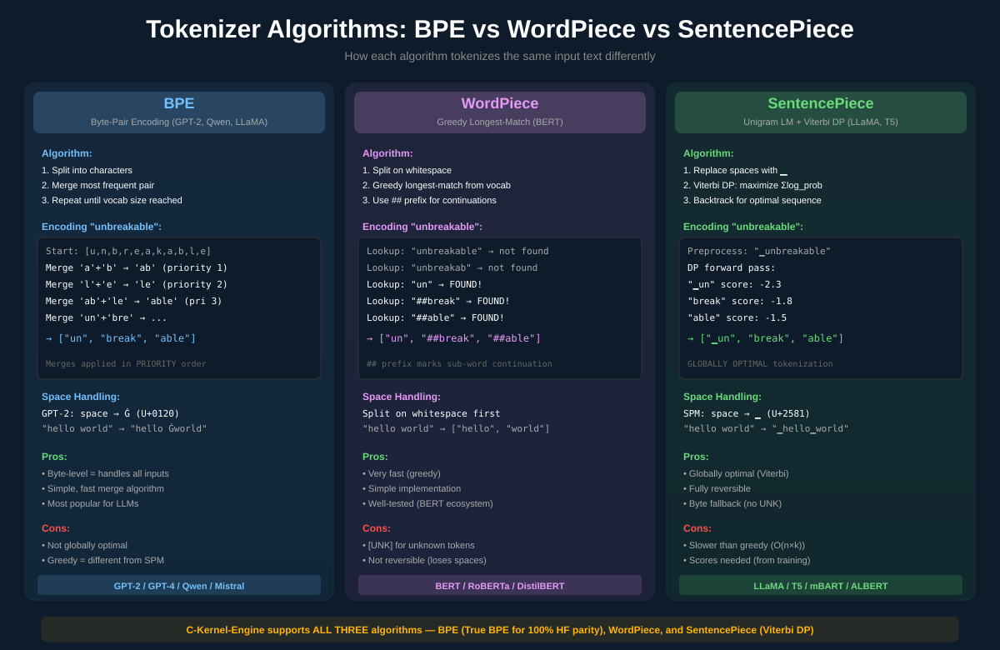
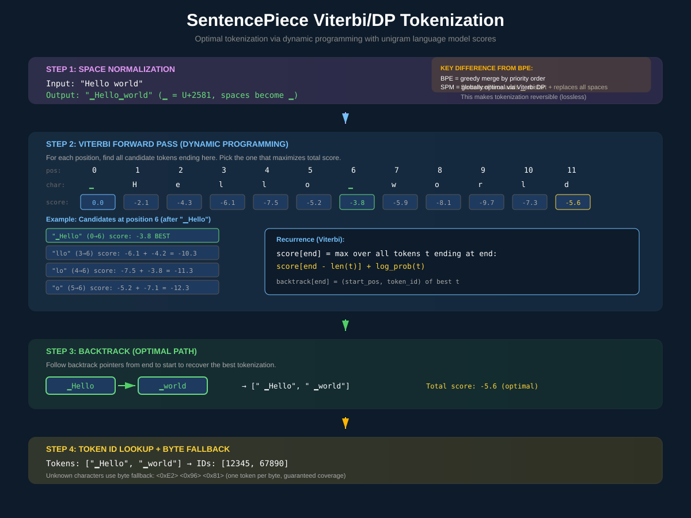
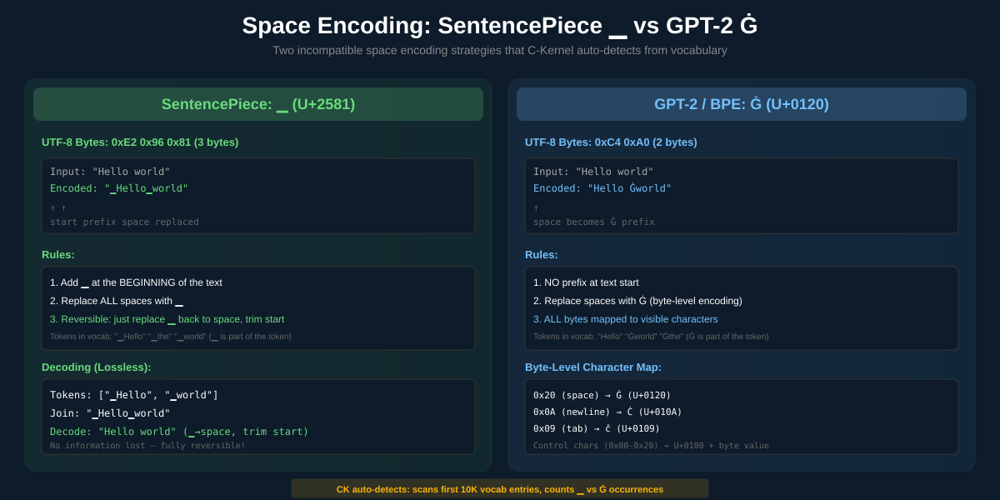
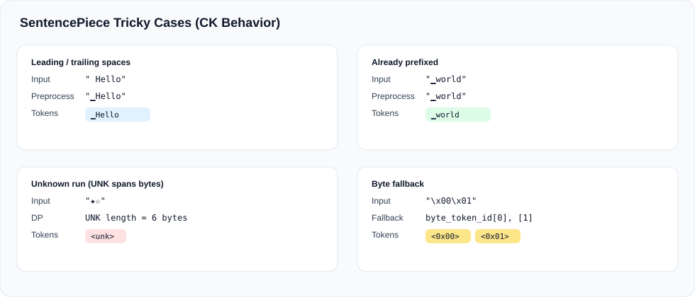

SentencePiece Tokenizer
Deep dive into SentencePiece: the unigram language model tokenizer that finds the globally optimal tokenization via Viterbi dynamic programming, with byte fallback for guaranteed coverage.
What is SentencePiece?
SentencePiece is a language-agnostic, unsupervised text tokenizer developed by Google (Kudo & Richardson, 2018). Unlike BPE which builds vocabulary bottom-up by merging frequent byte pairs, SentencePiece uses a unigram language model — each token has a learned probability score, and the tokenizer finds the sequence of tokens that maximizes the total log-probability.
Globally Optimal
Viterbi DP finds the token sequence that maximizes total score — unlike BPE's greedy merge-by-priority approach.
Byte Fallback
Unknown characters decompose into byte tokens (<0xE2>), guaranteeing 100% coverage of any input.
Fully Reversible
The ▁ (U+2581) space marker makes tokenization lossless — decode always reconstructs the original text exactly.
SentencePiece vs BPE vs WordPiece
The three major tokenization algorithms take fundamentally different approaches to the same problem. Here's how they compare:

| Feature | BPE (GPT-2) | WordPiece (BERT) | SentencePiece (LLaMA) |
|---|---|---|---|
| Algorithm | Merge by priority | Greedy longest-match | Viterbi DP (max score) |
| Training | Count pairs, merge most frequent | Likelihood-based selection | EM: grow vocab, prune by loss |
| Optimality | Local (greedy merges) | Local (greedy search) | Global (Viterbi DP) |
| Space handling | Ġ (U+0120) prefix | Whitespace split first | ▁ (U+2581) prefix |
| Unknown tokens | Byte-level (no UNK) | [UNK] token | Byte fallback (no UNK) |
| Reversible | Yes (byte-level) | No (## prefix lossy) | Yes (▁ encoding) |
| Sub-word marker | None (Ġ prefix on word starts) | ## prefix on continuations | ▁ prefix on word starts |
| Speed (CK) | Fast (merge loop O(n)) | Very fast (greedy O(k)) | Moderate (DP O(n×k)) |
| Models using it | GPT-2/4, Qwen, Mistral | BERT, RoBERTa, DistilBERT | LLaMA, T5, mBART, ALBERT |
The Unigram Language Model
At the heart of SentencePiece is the unigram language model. Each token t in the vocabulary has a learned log-probability score score(t). The tokenizer's goal is to find the segmentation S = (t1, t2, ..., tn) that maximizes:
P(S) = Π score(t_i) or equivalently: log P(S) = Σ log_score(t_i)
Example vocabulary with scores:
"▁Hello" → score: -3.8 (common word, high probability)
"▁Hell" → score: -5.2 (less common prefix)
"o" → score: -7.1 (single character, low probability)
"▁world" → score: -3.1 (very common word)
"▁wor" → score: -6.4 (uncommon prefix)
"ld" → score: -5.8 (uncommon suffix)
Tokenizing "Hello world":
Option A: ["▁Hello", "▁world"] → score: -3.8 + -3.1 = -6.9 ← BEST
Option B: ["▁Hell", "o", "▁world"] → score: -5.2 + -7.1 + -3.1 = -15.4
Option C: ["▁Hello", "▁wor", "ld"] → score: -3.8 + -6.4 + -5.8 = -16.0The key insight: scores are learned during training. Common subwords get high scores (less negative), rare ones get low scores. The Viterbi algorithm efficiently finds the globally optimal segmentation without trying all exponentially many possibilities.
The Viterbi DP Algorithm
Finding the optimal tokenization naively would require checking all possible segmentations — exponential in text length. The Viterbi algorithm solves this in O(n × k) time using dynamic programming, where n is the text length and k is the maximum token length.

Forward Pass
The forward pass builds a score table from left to right. For each position, it considers all tokens that could end at that position and picks the one that gives the best cumulative score:
// Simplified Viterbi forward pass (from tokenizer.c)
// score[i] = best total log-probability to tokenize text[0..i-1]
// back[i] = (start_position, token_id) of the best token ending at i
score[0] = 0.0; // Empty prefix has score 0
for (int end = 1; end <= text_len; end++) {
score[end] = -INFINITY; // Worst possible
// Try all tokens that end at position 'end'
for each token t in vocabulary where text[end-len(t)..end] == t:
int start = end - len(t);
float candidate = score[start] + t.log_score;
if (candidate > score[end]) {
score[end] = candidate;
back[end] = {start, t.id};
}
}Backtrack Pass
Once the forward pass reaches the end, we follow the back[] pointers backwards to recover the optimal sequence:
// Backtrack from end to start
int pos = text_len;
int token_count = 0;
int result[MAX_TOKENS];
while (pos > 0) {
result[token_count++] = back[pos].token_id;
pos = back[pos].start_position;
}
// Reverse to get left-to-right order
reverse(result, token_count);Space Handling: ▁ vs Ġ
Space encoding is one of the most important — and most confusing — aspects of tokenization. SentencePiece and GPT-2 use incompatible strategies, and getting this wrong produces completely wrong tokenizations.

Tricky Cases & CK Behavior
SentencePiece looks simple on paper, but there are a few subtle edge cases where implementations diverge. These are the ones that most often cause parity bugs. The CK tokenizer implements these behaviors explicitly so we match SentencePiece in practice.

Leading and Trailing Spaces
SentencePiece uses a dummy prefix (▁) for word starts. CK matches SPM’s whitespace normalization (collapse spaces, avoid double prefix), but only if the model’s config enables it. Some models disable the dummy prefix entirely.
Pitfall: add_dummy_prefix (GGUF: tokenizer.ggml.add_space_prefix) can be false. If CK still inserts ▁, tokenization diverges immediately.
Unknown Runs
When no token matches at a position, SPM inserts a single <unk> that can cover multiple consecutive bytes. CK tracks the unknown run length so one UNK covers the entire span, then merges consecutive UNKs to match SentencePiece.
Token Types Matter
SPM vocab entries carry types (NORMAL, UNKNOWN, CONTROL, USER_DEFINED, UNUSED, BYTE). CK excludes CONTROL/UNUSED/BYTE from DP and gives USER_DEFINED tokens a score of 0 (as in llama.cpp), preventing rare but costly mismatches.
Byte Fallback
If no SPM tokenization exists, CK falls back to byte tokens using a fast 0-255 lookup table. This covers both raw byte tokens and <0xXX> style tokens when present. If a model lacks byte tokens, CK falls back to <unk>.
Recent Parity Bugs & Fixes
- Dummy prefix mismatch: Some models (e.g., Gemma-3) ship with
tokenizer.ggml.add_space_prefix=false. CK previously assumed true, which injected a leading▁and caused immediate token divergence. - BOS/EOS handling: GGUF metadata includes
tokenizer.ggml.add_bos_token/add_eos_tokenplus explicit IDs. Ignoring these shifts the entire token stream and breaks embedding parity. - Test coverage gap: The original
make test-tokenizer-spmonly validated default SPM behavior. It now covers three suites: default SPM,add_dummy_prefix=false, and BOS/EOS enabled.
Practical Notes
- Normalization: CK implements SPM defaults and respects GGUF overrides (
add_space_prefix, BOS/EOS). If a model uses custom SPM normalizer options beyond these, use the Python tokenizer for strict parity. - UNK penalty: CK applies a SentencePiece-style unknown penalty during DP scoring to match reference behavior.
- Validation: Run
make test-tokenizer-spm. It now validates default SPM,add_dummy_prefix=false, and BOS/EOS modes.
SentencePiece: ▁ (U+2581)
- 3 bytes:
0xE2 0x96 0x81 - Character: lower one-eighth block (▁)
- Adds ▁ at start of text + replaces all spaces
- Tokens:
"▁Hello","▁the","▁world" - Used by: LLaMA, T5, mBART
GPT-2/BPE: Ġ (U+0120)
- 2 bytes:
0xC4 0xA0 - Character: Latin G with dot above (Ġ)
- Replaces spaces only, no start prefix
- Tokens:
"Hello","Ġthe","Ġworld" - Used by: GPT-2, GPT-4, Qwen
CK Auto-Detection
C-Kernel automatically detects which space encoding a model uses by scanning the vocabulary:
// From tokenizer.c - Auto-detect space prefix style
CKSpacePrefixStyle ck_tokenizer_detect_space_prefix_style(CKTokenizer *tok) {
int gpt2_count = 0; // Count tokens starting with Ġ (0xC4 0xA0)
int spm_count = 0; // Count tokens starting with ▁ (0xE2 0x96 0x81)
for (size_t i = 0; i < tok->vocab_size && i < 10000; i++) {
const char *token = tok->id_to_token[i];
if (!token) continue;
// Check for GPT-2 Ġ prefix
if ((unsigned char)token[0] == 0xC4 &&
(unsigned char)token[1] == 0xA0)
gpt2_count++;
// Check for SPM ▁ prefix
if ((unsigned char)token[0] == 0xE2 &&
(unsigned char)token[1] == 0x96 &&
(unsigned char)token[2] == 0x81)
spm_count++;
}
// SPM if ▁ tokens outnumber Ġ tokens by 2:1
if (spm_count > gpt2_count * 2)
return CK_SPACE_PREFIX_SPM;
else
return CK_SPACE_PREFIX_GPT2;
}Byte Fallback
One of SentencePiece's strongest features is byte fallback: when a character doesn't match any token in the vocabulary, it gets decomposed into individual byte tokens. This guarantees that every possible input can be tokenized — no [UNK] tokens needed.
// Example: Emoji "🎉" (U+1F389) = 4 UTF-8 bytes: 0xF0 0x9F 0x8E 0x89
//
// If "🎉" is not in vocabulary, byte fallback produces:
// ["<0xF0>", "<0x9F>", "<0x8E>", "<0x89>"]
//
// Each byte token has a GGUF token type of GGUF_TOKEN_BYTE (6).
// From tokenizer.c - Byte fallback during DP
if (score[end] == -INFINITY) {
// No token found ending here — use byte fallback
unsigned char byte = (unsigned char)text[end - 1];
int32_t byte_id = tok->byte_token_id[byte]; // Pre-built lookup
if (byte_id >= 0) {
score[end] = score[end - 1] + BYTE_FALLBACK_SCORE;
back[end] = {end - 1, byte_id};
}
}Byte Token Format in GGUF Models
GGUF models store 256 byte tokens with names like <0x00> through <0xFF>. CK builds a lookup table at load time:
// Build byte → token_id lookup (from tokenizer.c)
static void spm_build_byte_lookup(CKTokenizer *tok, ...) {
memset(tok->byte_token_id, -1, sizeof(tok->byte_token_id));
for (int i = 0; i < vocab_size; i++) {
if (tok->types[i] == GGUF_TOKEN_BYTE) {
// Parse hex value from token name like "<0xAB>"
unsigned int byte_val;
if (sscanf(tok->id_to_token[i], "<0x%02X>", &byte_val) == 1) {
tok->byte_token_id[byte_val] = i;
}
}
}
}CK Implementation Deep Dive
The C-Kernel tokenizer implements SentencePiece through several cooperating components. Here's how the pieces fit together:
Core Data Structures
// Main tokenizer structure (from tokenizer.h)
typedef struct CKTokenizer {
CKTokenizerConfig config; // Type (BPE/WordPiece/SPM), BOS/EOS flags
// Vocabulary storage (two lookup methods)
CKTokenizerHashTable *vocab; // token_string → TokenInfo (hash table)
CKTrie *vocab_trie; // token_string → id (trie, O(k) lookup)
// Reverse lookup
char **id_to_token; // token_id → token_string
size_t vocab_size;
// SentencePiece-specific fields
float *scores; // token_id → unigram log-probability
uint8_t *types; // token_id → GGUF type (normal/byte/control)
int32_t *byte_token_id; // byte_value → token_id (256 entries)
// Special token IDs
int32_t unk_id, bos_id, eos_id, pad_id;
// BPE merge rules (used when type is BPE, not SPM)
int32_t *merge_pairs;
int32_t *merge_result;
int32_t num_merges;
// Memory management
CKTokenizerMemPool pool; // Arena allocator (16MB default)
} CKTokenizer;Token Types (GGUF)
GGUF models annotate each vocabulary entry with a type that controls how the tokenizer treats it:
| Type | Value | Behavior in DP | Example |
|---|---|---|---|
NORMAL | 1 | Considered as candidate, scored | "▁Hello" |
UNKNOWN | 2 | Excluded from DP candidates | "<unk>" |
CONTROL | 3 | Excluded from DP candidates | "<s>", "</s>" |
USER_DEFINED | 4 | Included, score treated as 0.0 | "<|im_start|>" |
UNUSED | 5 | Excluded from DP candidates | Reserved slots |
BYTE | 6 | Used only in byte fallback path | "<0xE2>" |
The Encoding Pipeline
Here's the complete flow when ck_tokenizer_encode() is called with CK_TOKENIZER_SPM mode:
int ck_tokenizer_encode(CKTokenizer *tok, const char *text, int text_len,
int32_t *output_ids, int max_ids) {
int count = 0;
// Step 1: Add BOS token if configured
if (tok->config.add_bos && tok->bos_id >= 0)
output_ids[count++] = tok->bos_id;
// Step 2: Preprocess — add ▁ prefix and replace spaces
char processed[MAX_LEN];
spm_preprocess(text, processed);
// "Hello world" → "▁Hello▁world"
// Step 3: Viterbi DP (the core algorithm)
int num_tokens = spm_viterbi_encode(tok, processed, strlen(processed),
output_ids + count, max_ids - count);
count += num_tokens;
// Step 4: Add EOS token if configured
if (tok->config.add_eos && tok->eos_id >= 0)
output_ids[count++] = tok->eos_id;
return count;
}Vocabulary Lookup: Trie vs Hash Table
The DP forward pass needs to find all vocabulary tokens matching at each position. CK supports two lookup strategies:
Trie Lookup (Default)
// O(k) per position — single traversal
CKTrieNode *node = trie->root;
int pos = start;
while (pos < end) {
node = node->children[(uint8_t)text[pos]];
if (!node) break;
pos++;
if (node->token_id >= 0) {
// Found a valid token!
consider_candidate(node->token_id,
start, pos);
}
}
// Finds ALL matching tokens in one pass256-way branching, zero hashing
Hash Table Lookup
// O(n×k) per position — try all lengths
for (int len = max_len; len >= 1; len--) {
char tmp[MAX_TOKEN_LEN];
memcpy(tmp, text + start, len);
tmp[len] = '\0';
TokenInfo *info = hash_lookup(vocab, tmp);
if (info) {
consider_candidate(info->id,
start, start + len);
}
}
// Must try each possible length separatelyMurmurHash3, memcpy per attempt
Token Score Filtering
Not all vocabulary tokens should participate in the DP. The encoding function filters based on GGUF token type:
// During DP candidate evaluation
for each candidate token t at position [start..end]:
// Skip non-scorable tokens
if (tok->types[t.id] == GGUF_TOKEN_UNKNOWN) continue; // <unk>
if (tok->types[t.id] == GGUF_TOKEN_CONTROL) continue; // <s>, </s>
if (tok->types[t.id] == GGUF_TOKEN_UNUSED) continue; // reserved
if (tok->types[t.id] == GGUF_TOKEN_BYTE) continue; // byte fallback only
// Use score from vocabulary
float token_score = tok->scores[t.id];
// USER_DEFINED tokens get score 0 (highest priority)
if (tok->types[t.id] == GGUF_TOKEN_USER_DEFINED)
token_score = 0.0f;
// DP transition
float candidate = score[start] + token_score;
if (candidate > score[end]) {
score[end] = candidate;
back[end] = {start, t.id};
}Loading from GGUF
SentencePiece tokenizers in the LLaMA ecosystem are stored as part of GGUF model files. CK loads them through a binary format optimized for fast initialization:
// GGUF metadata keys used for tokenizer loading:
// tokenizer.ggml.model = "llama" (indicates SPM)
// tokenizer.ggml.tokens = ["<unk>", "<s>", "</s>", ..., "▁Hello", ...]
// tokenizer.ggml.scores = [-1e10, -1e10, -1e10, ..., -3.8, ...]
// tokenizer.ggml.token_type = [2, 3, 3, ..., 1, ...] (UNKNOWN, CONTROL, NORMAL...)
// tokenizer.ggml.add_space_prefix = true/false (SPM add_dummy_prefix)
// tokenizer.ggml.add_bos_token = true/false
// tokenizer.ggml.add_eos_token = true/false
// tokenizer.ggml.bos_token_id = 2
// tokenizer.ggml.eos_token_id = 106
// tokenizer.ggml.unknown_token_id = 3
// tokenizer.ggml.padding_token_id = 0
// Loading flow:
CKTokenizer *tok = ck_tokenizer_create(CK_TOKENIZER_SPM);
// Load vocabulary + scores from GGUF-extracted data
ck_tokenizer_load_binary_with_scores(
tok,
vocab_size, // e.g., 151936 for Qwen, 32000 for LLaMA
vocab_offsets, // Byte offsets into string pool
vocab_strings, // Concatenated token strings
vocab_scores, // Float scores (log-probabilities)
vocab_types, // uint8 GGUF types
num_merges, // 0 for pure SPM (LLaMA), >0 for BPE (Qwen)
merge_data // BPE merge triples (left_id, right_id, merged_id)
);
// Apply GGUF-configured flags + IDs
ck_tokenizer_set_add_space_prefix(tok, add_space_prefix);
ck_tokenizer_set_add_bos_eos(tok, add_bos, add_eos);
ck_tokenizer_set_special_ids(tok, unk_id, bos_id, eos_id, pad_id, -1);
// Auto-detect space prefix style from vocabulary contents
ck_tokenizer_detect_and_set_space_prefix(tok);tokenizer.ggml.model field determines which algorithm to use: "llama" = SentencePiece, "gpt2" = BPE. CK checks this field and switches encoding algorithm accordingly.
Decoding (Token IDs → Text)
SentencePiece decoding is simpler than encoding — concatenate token strings and reverse the space encoding:
// Decode token IDs back to text
int ck_tokenizer_decode(CKTokenizer *tok, const int32_t *ids, int num_ids,
char *output, int max_len) {
int pos = 0;
for (int i = 0; i < num_ids; i++) {
// Skip BOS/EOS control tokens
if (ids[i] == tok->bos_id || ids[i] == tok->eos_id)
continue;
const char *token = tok->id_to_token[ids[i]];
// Handle byte fallback tokens: "<0xAB>" → raw byte 0xAB
if (tok->types[ids[i]] == GGUF_TOKEN_BYTE) {
unsigned int byte_val;
sscanf(token, "<0x%02X>", &byte_val);
output[pos++] = (char)byte_val;
continue;
}
// Copy token string to output
int len = strlen(token);
memcpy(output + pos, token, len);
pos += len;
}
output[pos] = '\0';
// Post-process: replace ▁ with space, trim leading space
spm_postprocess(output);
// "▁Hello▁world" → "Hello world"
return pos;
}Memory Architecture
The tokenizer uses an arena allocator (CKTokenizerMemPool) for all string storage, avoiding per-token malloc overhead:
// Memory pool layout (16MB default)
┌─────────────────────────────────────────────────────┐
│ CKTokenizerMemPool (16 MB arena) │
│ │
│ ┌───────────┬──────────┬──────────┬────────────┐ │
│ │ "▁Hello" │ "▁world" │ "<unk>" │ "<0xE2>" │...│
│ │ 10 bytes │ 10 bytes │ 6 bytes │ 7 bytes │ │
│ └───────────┴──────────┴──────────┴────────────┘ │
│ │
│ All strings packed contiguously, zero fragmentation │
│ Aligned allocations for SIMD hash table operations │
└─────────────────────────────────────────────────────┘
// Trie also allocated from pool
CKTrie: 256-way branching nodes (256 × 8 bytes per node)
- Typical vocab (32K-152K tokens) → 50-200K trie nodes
- Total trie memory: 100 KB - 1.5 MBTest Results
The SentencePiece implementation is validated against reference tokenizers:
SPM Parity
100% match
- ASCII text
- UTF-8 multilingual
- Emoji byte fallback
- Whitespace edge cases
Model Coverage
Validated models
- LLaMA 2/3 (SPM)
- Qwen 2/2.5/3 (BPE)
- Gemma 3 (SPM)
Performance
Trie: ~100K chars/ms
- 27-156x vs Hash Table
- 20-104x vs Python
- 16MB arena, zero malloc
Running Tokenizer Tests
# Full tokenizer test suite
make test-tokenizer
# SentencePiece-specific parity tests
python unittest/test_tokenizer_spm_parity.py --verbose
# Multi-model parity (LLaMA, Qwen, etc.)
python unittest/test_tokenizer_multi_model.py --verbose
# GGUF format parity
python unittest/test_tokenizer_gguf_parity.py --verboseAPI Quick Reference
Create & Configure
// Create SentencePiece tokenizer
CKTokenizer *tok = ck_tokenizer_create(CK_TOKENIZER_SPM);
// Configure BOS/EOS behavior
tok->config.add_bos = true; // Prepend <s> token
tok->config.add_eos = false; // Don't append </s>
// Enable trie lookups (faster DP)
ck_tokenizer_set_use_trie(tok, true);Load Vocabulary
// Add tokens with scores
ck_tokenizer_add_token(tok, "▁Hello", 100, -3.8f);
ck_tokenizer_add_token(tok, "▁world", 101, -3.1f);
// Add special tokens
ck_tokenizer_add_special_token(tok, "<unk>", 0);
ck_tokenizer_add_special_token(tok, "<s>", 1);
ck_tokenizer_add_special_token(tok, "</s>", 2);
// Or load from GGUF-extracted binary data
ck_tokenizer_load_binary_with_scores(tok, vocab_size, offsets,
strings, scores, types, num_merges, merges);Encode & Decode
// Encode text → token IDs
int32_t ids[1024];
int n = ck_tokenizer_encode(tok, "Hello world", -1, ids, 1024);
// ids = [1, 12345, 67890] (BOS + "▁Hello" + "▁world")
// Decode token IDs → text
char text[4096];
ck_tokenizer_decode(tok, ids, n, text, 4096);
// text = "Hello world"
// Cleanup
ck_tokenizer_free(tok);Related Documentation
- Tokenizer Overview — Full architecture: BPE, WordPiece, SentencePiece, Trie, True BPE
- Deep Dive Concepts — Transformer architecture fundamentals
- GGUF Parsing — How GGUF model files are loaded
- GGUF to Bump — Weight conversion pipeline
- Testing Guide — Running parity and unit tests